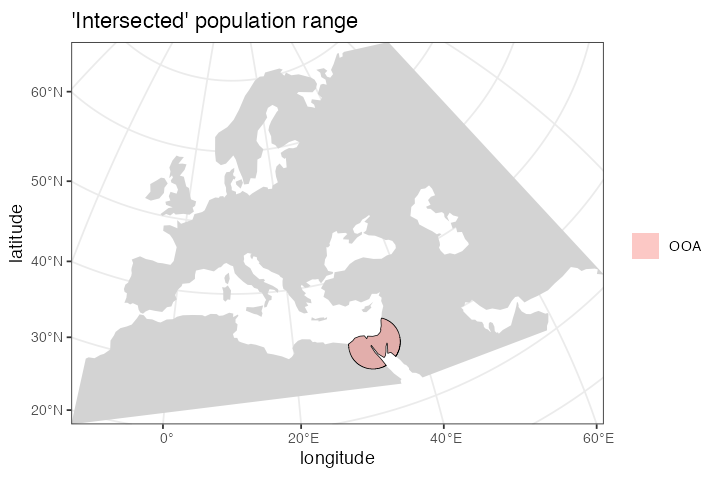
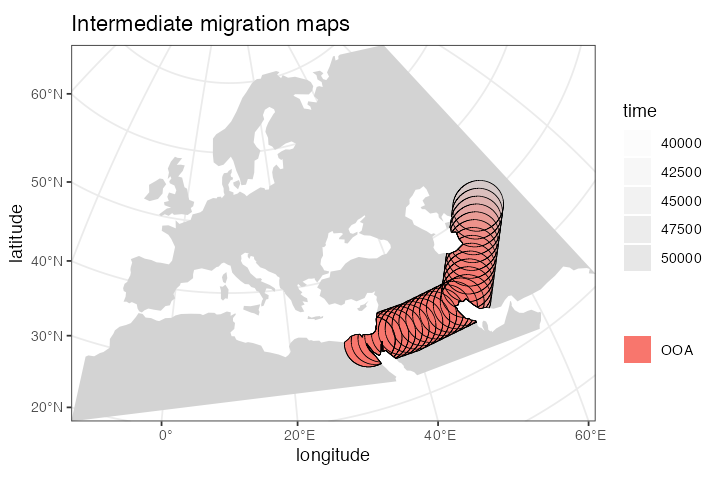
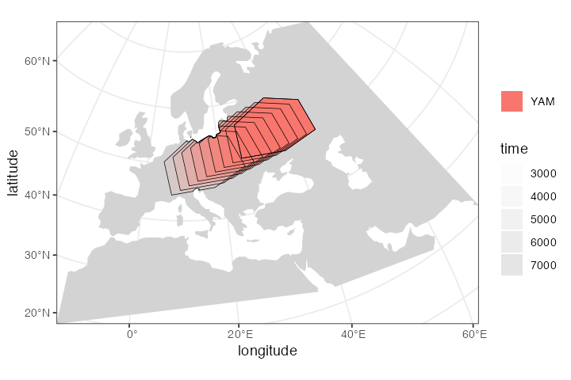

Motivation
Our motivation for starting this project was to create a programmable simulation framework which would add an explicit spatial dimension to population genetics models. Specifically, the original idea was was to be able to take models such as the one here—

representing a very simplified view of the history of anatomically modern humans (AMH) in West Eurasia over the last ~50 thousand years ago (a comprehensive overview can be found in a review by Lazaridis)—and design a tool which will make it possible to simulate such models in an explicit geographical context to capture processes similar to those in the following figure (taken from a study by Haak et al. 2015):

The reason for doing this is probably clear. A lot of what we do in studying the history of humans and other species is focused on reconstructing population movements, expansions and geneflow events, all of which happen in a geographical context. In fact, this geographic component is often what we are most interested in (i.e., “Where did the ancestors of some population come from?”, “By which route and how fast did they migrate?”, etc.). However, this goes beyond just simulating demographic history. For instance, selection pressure driving adaptation can often be spatially heterogeneous: members of a population occupying one part of the continent could be exposed to a different environmental pressure than individuals elsewhere, and allele frequency distribution shaped by the adaptation process would reflect this spatial heterogeneity accordingly. Having a way to simulate explicitly spatial genomic data in such situations would allow us to build more realistic models and test more specific hypotheses than are simply not possible by non-spatial simulation methods.
The R package slendr introduced in this vignette presents such a framework. Internally, the package has two independent but tightly interconnected units:
R interface which provides a set of functional primitives (a “mini-language” of sorts) for encoding various features of spatiotemporal models: population migrations, expansions and geneflow, all happening on a real geographic landscape defined freely available cartographic data. Populations are represented as simple R objects, their boundaries can be easily visualized, making it possible to build very complex models interactively from a set of small and simple building blocks.
SLiM simulation backend represented by a built-in generic SLiM script designed to read all the spatiotemporal parameters and objects established by the R interface, and program the simulation run tailored to the user-defined model.
The most important design objective was to make both parts 1. and 2. appear completely seamless. Even for extremely complex models, the model building and execution (i.e. simulation) can be performed without leaving the convenience of an R interface such as RStudio. All the simulation complexities happen automatically under the hood and knowledge of SLiM is not required. In fact, the motto of the slendr package is “Write complex spatiotemporal population genetics models as a simple R script.”
Geospatial data
Geospatial analysis is a deep and complex topic, with dozens of libraries and programs designed to deal with the fact that the Earth is a three-dimensional object but we are forced to plot geographical objects (and, in our case, simulate data) on a two-dimensional plane.
Luckily, most of the technical issues with Coordinate Reference Systems, transformations between them and manipulation of geometric objects (shifting of population boundaries, expansions, etc.) are pretty much solved now. Unfortunately, dealing with these issues in practice is quite challenging and requires a non-trivial degree of domain expertise. Programming even a very simple tasks in geospatial data analysis also often requires a lot of code.
This R package is designed to provide a collection of primitives (a “mini-language” of sorts) for programming population dynamics (splits, movement, geneflow, and expansion of spatial boundaries) across space and time without having to explicitly deal with any of the challenges inherent to geospatial analyses.
Installation and setup
First, let’s install the latest version of the package and load it. slendr is not yet on CRAN (but will be soon!), so you will need to install the development version from Github using devtools.
Here are the installation steps:
- Install non-R software dependencies
Some of the R libraries that slendr uses internally rely on non-R software that needs to be installed before doing anything else. At the very least, you should make sure to install udunits and gdal on your system (if you’re on a Mac, I recommend homebrew).
There is one simple test to make sure that you will be able to install and use slendr. A lot of the geospatial heavy lifting is being done by the sfpackage. This is an R package we use to manipulate geometrical objects in space and time (all of which is considered an internal low-level thing, so you are never exposed to it). My suggestion is to first make sure that you can first successfully install sf by running install.packages("sf"). After that, installing slendr is trivial.
- Install the devtools package:
install.packages("devtools")On some systems, devtools installation fails because of a missing libgit dependency. If that happens, please install libgit2 first (on a Mac, you can use homebrew again).
- Install slendr:
devtools::install_github("bodkan/slendr")This is necessary because slendr is not on CRAN yet. After we submit it, it will be possible to install it by simply running install.packages("slendr") in your R console.
- That’s it! You can now load the package with the usual:
Finally, because the package is actively being worked on, improvements and bug fixes are being added every couple of hours. Make sure to install the latest development version (step 3. above) each time you’re about to test some things (such as the examples in this vignette). You can track changes between development releases in the changelog.
Defining the overall world map
Before we do anything else, we need to define a section of the map of the world which will provide context for all downstream spatio-temporal manipulation of population ranges.
In principle, any source of geospatial data which can be manipulated using the simple features (sf) infrastructure could be used. For now the slendr package implicitly uses the Natural Earth project data (in it’s vectorized form!), which it internally loads using the rnaturalearth interface.
The first function we will look at is map(). This function will load the map of the entire world in a vectorized format and zoom in to a specified section of the world.
Note that in the call below, we specify the coordinates of the zoom in a geographical Coordinate Reference System (CRS), i.e. longitude/latitude), but we also specified that we want to perform all the downstream manipulation of the spatial population maps in a projected CRS (Lambert Azimuthal Equal-Area projection) which is more appropriate for representing a wider European continent used in this tutorial. Of course, different CRS projection could be used based on which part of the world we want to simulate. Describing the intricacies of coordinate reference systems is beyond the scope of this tutorial but if you’re interested in learning more I encourage you to read a couple of paragraphs in this section of a freely available textbook dedicated to this topic (written by the author of the sf package himself!).
This is the approach of slendr: let the user specify everything in an easy to understand longitude/latitude geographical CRS (which can be read from any map, making it very easy to define spatial boundaries and trajectories of movement), but the internal data structures and the final exported spatial maps are internally handled in a projected CRS which is important to make sure that distances and proportions are not distorted.
map <- world(
xrange = c(-15, 60), # min-max longitude
yrange = c(20, 65), # min-max latitude
crs = "EPSG:3035" # real projected CRS used internally
)Internally, the map object is a normal sf class object without additional components. This is unlike other slendr object described below, which are also sf objects but which carry additional internal components.
Note that the summary of the object says “projected CRS: ETRS89-extended / LAEA Europe”. This means that the world map has indeed been transformed in the projected CRS we specified above.
map
#> slendr 'map' object
#> -------------------
#> map: internal coordinate reference system: EPSG 3035
#> spatial limits (in degrees longitude and latitude):
#> - vertical -15 ... 60
#> - horizontal 20 ... 65Plotting geographical features and population ranges
The slendr package implements its own plotting function called plot().
We do this in order to make it easier and more convenient to iteratively build more complex models. The function can smartly decide (based on given input arguments) what is the right way to present the data for the user which helps to define models more quickly without relying on the lower-level mechanisms of the sf package.
More on that below, but here we will just plot the world context we just created:
plot(map, title = "Zoomed-in world map context")
Defining smaller geographic regions
In addition to the overall spatial map context, we can also define smaller geographic boundaries. This is mostly useful whenever we want to restrict a population movement (such as spatial population expansion) to a smaller region of the map that has some intuitive geographic meaning (i.e. Anatolia, West Eurasia, etc.).
africa <- region(
"Africa", map,
polygon = list(c(-18, 20), c(40, 20), c(30, 33),
c(20, 32), c(10, 35), c(-8, 35))
)
europe <- region(
"Europe", map,
polygon = list(
c(-8, 35), c(-5, 36), c(10, 38), c(20, 35), c(25, 35),
c(33, 45), c(20, 58), c(-5, 60), c(-15, 50)
)
)
anatolia <- region(
"Anatolia", map,
polygon = list(c(28, 35), c(40, 35), c(42, 40),
c(30, 43), c(27, 40), c(25, 38))
)Note that the objects created above are not population boundaries (not yet anyway)! These are nothing else but labels of some generic geographic boundaries which can be used later. They are not attached to any population at this point.
Again, the object returned by the region() function is actually a normal sf object, but carrying some additional annotation such as the name of the region (here “Anatolia”):
anatolia
#> slendr 'region' object
#> ----------------------
#> name: Anatolia
#>
#> map: internal coordinate reference system: EPSG 3035However, the object also carries additional class annotations for the purpose of internal slendr machinery:
class(anatolia)
#> [1] "slendr" "slendr_region" "sf" "data.frame"Furthermore, note that in all region() calls we specified the map object defined at the very beginning. This object is added as a hidden attribute to each slendr object and represents the context for all geospatial transformations, expansions, and plotting.
Again, we can use the generic plot() function to plot both geographic regions in the context of the defined section of the world map:
plot(africa, europe, anatolia, title = "Geographic regions")
Note that the map object is no longer explicitly specified. It is not needed, because each other class of objects provided to the plot() function must carry it as a “map” attribute. In fact, each such object must carry the same map context - slendr complains whenever this is not the case.
We can check that the component is really there, although hidden, using the built-in attr function and verify that it is the same as the map object we created at the beginning:
Defining spatial population boundaries
One of the aims of the slendr package is formalizing the specification of spatial population boundaries and their changes over time. The core function for this is population(), which accepts the population name and the time in which we want to enforce that population’s boundary, the effective population size of this population, as well as the map object described above. We also have to specify from which population did our population split from (or explicitly say that it’s an ancestral population). As for specifying the actual spatial boundaries, we have several options.
Polygon population ranges
We can define fine population boundaries using a polygon geometry object (polygon = argument) or a region object created by the region() function above. Again, as a reminder, note that all coordinates are described in the context of the geographic CRS.
First, let’s create the African ancestors of modern humans. We restrict the spatial boundary of the African population to the africa region defined above:
afr <- population(
"AFR", parent = "ancestor", time = 52000, N = 3000,
map = map, polygon = africa
)
plot(afr)
Circular population ranges
In case we want to simulate a more abstract and simpler population boundary, we can specify a center and radius arguments instead of the polygons. All distance units in the slendr package are specified in the coordinate system given during “world creation”. For instance, EPSG 3035 we’re using here specifies distances in meters:
Here we define the location of the population of non-Africans right after their split from the African ancestors:
ooa <- population(
"OOA", parent = afr, time = 51000, N = 500, remove = 25000,
center = c(33, 30), radius = 400e3
)If we call the plot() function on the returned object, we have the option to either plot the population range in its “raw” form or in its “intersected” form, in which case the raw boundary is intersected with the “background” landscape (removing large bodies of water, etc.).
The intersected form is what is ultimately exported in a serialized form (see below) to be loaded as a spatial map into SLiM. This is why the plot() function renders intersected population ranges by default.
plot(ooa, intersect = FALSE, title = "'Raw' population range")
plot(ooa, title = "'Intersected' population range")
Population movement across a landscape
To describe a a directional population movement, we can use the function move(). This accepts the coordinates of the destination points along the way (trajectory) and the duration of the migration and automatically generates intermediate spatial maps along the trajectory of movement to satisfy a sufficient degree of spatial continuity (this number can be also specified manually).
ooa <- ooa %>% move(
trajectory = list(c(40, 30), c(50, 30), c(60, 40)),
start = 50000, end = 40000
)We can inspect the object returned by the move() function and see that it now contains not just the first YAM population range at 7000 years ago, but also the ranges of the intermediate locations:
ooa
#> slendr 'population' object
#> --------------------------
#> name: OOA
#> habitat: terrestrial
#>
#> number of spatial maps: 28
#> map: internal coordinate reference system: EPSG 3035
#> scheduled removal at time 25000
#>
#> population history overview:
#> - time 51000: split from AFR
#> - time 50000-40000: movement across a landscapeChecking the result visually again, we see:
plot(ooa, title = "Intermediate migration maps")
#> Warning: Attempting to plot population ranges at multiple time points on
#> a single map. This is very hard to do in a satisfying way. Please
#> consider using the function `explore()` to plot the model dynamics
#> interactively.
Let’s create a population of Eastern Hunter Gatherers (EHG), which split from the first non-Africans 28000 years ago:
ehg <- population(
"EHG", parent = ooa, time = 28000, N = 1000, remove = 6000,
polygon = list(
c(26, 55), c(38, 53), c(48, 53), c(60, 53),
c(60, 60), c(48, 63), c(38, 63), c(26, 60))
)
plot(ehg)
While we’re at it, let’s also create a population of Western Hunter Gatherers (WHG). Because the people living in this region eventually became present day Europeans after receiving geneflow from other groups over time (see below), we will call them “EUR” to simplify the modeling code a little bit:
eur <- population( # European population
name = "EUR", parent = ehg, time = 25000, N = 2000,
polygon = europe
)
plot(eur)
Spatial population expansion
We can simulate the expanding range of a population using the function expand(), which accepts a parameter specifying by how many kilometers should the boundary expand (the by argument), how long should the expansion take (the duration argument) and how many intermediate spatial map snapshots should be exported representing this expansion (the snapshots argument).
For instance, let’s represent the expansion of Anatolian farmers, who also split from the OOA population at 28000 years ago, at the time of the split of the EHG population. Note that we use use an optional parameter polygon which restricts the expansion only to Europe, instead of all around Anatolia:
ana <- population( # Anatolian farmers
name = "ANA", time = 28000, N = 3000, parent = ooa, remove = 4000,
center = c(34, 38), radius = 500e3, polygon = anatolia
) %>%
expand( # expand the range by 2.500 km
by = 2500e3, start = 10000, end = 7000,
polygon = join(europe, anatolia)
)Note that in principle, you could specify the entire spatio-temporal history of a population in a single pipeline using the pipe operator %>%.
Again, we can inspect the object returned by the expand() function and see that it contains the spatial maps (“snapshots”) of the expansion process across time:
ana
#> slendr 'population' object
#> --------------------------
#> name: ANA
#> habitat: terrestrial
#>
#> number of spatial maps: 17
#> map: internal coordinate reference system: EPSG 3035
#> scheduled removal at time 4000
#>
#> population history overview:
#> - time 28000: split from OOA
#> - time 10000-7000: range expansionWe can (and should) check the results visually:
plot(ana, title = "Anatolian expansion into Europe")
#> Warning: Attempting to plot population ranges at multiple time points on
#> a single map. This is very hard to do in a satisfying way. Please
#> consider using the function `explore()` to plot the model dynamics
#> interactively.To visually see what is really going on behind the scenes, we can plot the raw form of the expansion:
plot(ana, title = "Anatolian expansion into Europe (not intersected)", intersect = FALSE)
#> Warning: Attempting to plot population ranges at multiple time points on
#> a single map. This is very hard to do in a satisfying way. Please
#> consider using the function `explore()` to plot the model dynamics
#> interactively.
We can see that the population of Anatolian farmers at some point invades the spatial boundary of the EUR population. On its own, this doesn’t imply geneflow. In the section on geneflow below, we will see how slendr implements geneflow of overlapping (but also non-overlapping) populations.
Let’s add a couple of more populations and migrations before we move on to implementing geneflow between them,
Yamnaya steppe herders:
yam <- population( # Yamnaya steppe population
name = "YAM", time = 7000, N = 500, parent = ehg, remove = 2500,
polygon = list(c(26, 50), c(38, 49), c(48, 50),
c(48, 56), c(38, 59), c(26, 56))
)
plot(yam)
Yamnaya invading Europe:
yam <- yam %>%
move(
trajectory = c(15, 50),
start = 5000, end = 3000, snapshots = 8
)
plot(yam)
#> Warning: Attempting to plot population ranges at multiple time points on
#> a single map. This is very hard to do in a satisfying way. Please
#> consider using the function `explore()` to plot the model dynamics
#> interactively.
Plotting multiple slendr objects
In addition to plotting individual population ranges, the generic function plot() can handle a combination of population ranges, and can also partition them in individual facets. This is useful for visual inspection of the specified model and for looking for potential issues before the export of individual spatio-temporal maps. Obviously, this is a lot of multi-dimensional information:
plot(afr, ooa, ehg, eur, ana, yam)
#> Warning: Attempting to plot population ranges at multiple time points on
#> a single map. This is very hard to do in a satisfying way. Please
#> consider using the function `explore()` to plot the model dynamics
#> interactively.
Below you will see a better way to explore a slendr model interactively.
Define geneflow events
The way slendr implements geneflow events is by calling the geneflow() function. This function has a very straightforward interface which you should be able to understand from the examples below.
One thing to note is that the from and to populations must have overlapping spatial ranges in order to simulate geneflow. This is probably rather obvious, as populations can’t mix in space-time if they don’t overlap at a given point in space-time.
For example, if you look at the spatial boundaries plotted above, you’ll see that the European and African populations don’t have any overlap in population ranges. If we try to instruct slendr to simulate geneflow between them, we will get an error:
geneflows <- geneflow(from = eur, to = afr, rate = 0.1, start = 20000, end = 15000)Not a sufficient overlap between population ranges of EUR and AFR
at time 20000. The required overlap is 0.20 but the current overlap is
0.000000.
Please check the spatial maps of both populations by running
`plot(eur, afr)` and adjust them accordingly. Alternatively, in case
this makes sense for your model, you can add `overlap = F` which
will instruct slendr to simulate geneflow without spatial overlap
between populations.The error message instructs us to visually verify that this is the case, which can be done by slendr’s plot() function and the optional parameter pop_facets = F (which is set to TRUE by default):
plot(eur, afr)
#> Warning: Attempting to plot population ranges at multiple time points on
#> a single map. This is very hard to do in a satisfying way. Please
#> consider using the function `explore()` to plot the model dynamics
#> interactively.
Many models will include multiple geneflow events, which we can collect in a simple R list:
gf <- list(
geneflow(from = ana, to = yam, rate = 0.5, start = 6500, end = 6400, overlap = FALSE),
geneflow(from = ana, to = eur, rate = 0.5, start = 8000, end = 6000),
geneflow(from = yam, to = eur, rate = 0.75, start = 4000, end = 3000)
)The geneflow() function returns nothing else than a data frame collecting all the geneflow parameters for the compile() step below:
gf
#> [[1]]
#> from_name to_name tstart tend rate overlap
#> 1 ANA YAM 6500 6400 0.5 FALSE
#>
#> [[2]]
#> from_name to_name tstart tend rate overlap
#> 1 ANA EUR 8000 6000 0.5 TRUE
#>
#> [[3]]
#> from_name to_name tstart tend rate overlap
#> 1 YAM EUR 4000 3000 0.75 TRUECompile the whole model and load it in SLiM
The most crucial function of slendr is compile(). It takes all population ranges defined across space and time together with list of geneflow events (this is optional, of course, as some models won’t include geneflow), and then proceeds by converting all vectorized spatial ranges to a raster bitmap form. Furthermore, it compiles all information about split times, \(N_e\) values, geneflow directions, times and rates, to a series of tables. All of that will be saved automatically in a dedicated directory in a format that is understood by the backend SLiM script provided by slendr (more on that below).
model <- compile(
populations = list(afr, ooa, ehg, eur, ana, yam), # populations defined above
geneflow = gf, # geneflow events defined above
generation_time = 30,
resolution = 10e3, # resolution in meters per pixel
competition_dist = 130e3, mate_dist = 100e3, # spatial interaction in SLiM
dispersal_dist = 70e3, # how far will offspring end up from their parents
dir = file.path(tempdir(), "tutorial-model"), overwrite = TRUE
)What do the files in the model directory look like? In an ideal case, you as a user should never worry about these things. In fact, the whole purpose of slendr is to let you work on much higher level of abstraction without worrying about these low-level details. That said, you might find it useful to see how things are stored in the background…
First of all, we can inspect the contents of the directory and see that it does, indeed, contain all defined spatial maps (now PNG files, which is what SLiM requires).
list.files(file.path(tempdir(), "tutorial-model"), pattern = "*.png")
#> [1] "1.png" "10.png" "11.png" "12.png" "13.png" "14.png" "15.png" "16.png"
#> [9] "17.png" "18.png" "19.png" "2.png" "20.png" "21.png" "22.png" "23.png"
#> [17] "24.png" "25.png" "26.png" "27.png" "28.png" "29.png" "3.png" "30.png"
#> [25] "31.png" "32.png" "33.png" "34.png" "35.png" "36.png" "37.png" "38.png"
#> [33] "39.png" "4.png" "40.png" "41.png" "42.png" "43.png" "44.png" "45.png"
#> [41] "46.png" "47.png" "48.png" "49.png" "5.png" "50.png" "51.png" "52.png"
#> [49] "53.png" "54.png" "55.png" "56.png" "57.png" "6.png" "7.png" "8.png"
#> [57] "9.png"It also contains a series of tab-separated configuration tables. These tables contain summaries of the model parameters which we defined graphically above, namely:
- the table of population splits:
read.table(file.path(tempdir(), "tutorial-model", "splits.tsv"), header = TRUE)
#> pop parent N tsplit_gen tsplit_orig tremove_gen tremove_orig pop_id
#> 1 AFR ancestor 3000 1 52000 -1 -1 0
#> 2 OOA AFR 500 34 51000 901 25000 1
#> 3 EHG OOA 1000 801 28000 1534 6000 2
#> 4 ANA OOA 3000 801 28000 1601 4000 3
#> 5 EUR EHG 2000 901 25000 -1 -1 4
#> 6 YAM EHG 500 1501 7000 1651 2500 5
#> parent_id
#> 1 -1
#> 2 0
#> 3 1
#> 4 1
#> 5 2
#> 6 2- the table of geneflow events:
read.table(file.path(tempdir(), "tutorial-model", "geneflow.tsv"), header = TRUE)
#> from to rate overlap tstart_gen tstart_orig tend_gen tend_orig from_id to_id
#> 1 ANA YAM 0.50 0 1518 6500 1521 6400 3 5
#> 2 ANA EUR 0.50 1 1468 8000 1534 6000 3 4
#> 3 YAM EUR 0.75 1 1601 4000 1634 3000 5 4- and finally, the table of populations whose spatial maps will be updated throughout the simulation, as well as the times of those updates (this table is rather long, so we’re not showing it here).
The object returned by the compile() function (called model here) binds all of this information together. In fact, for easier debugging and sanity checks, it carries the locations of these tables (as well as other important information) in it as elements of a list model$splits, model$geneflows, etc.
In case you’d want to separate model specification and running into different scripts, slendr includes a function read() just for this purpose:
Visualize the entire history of splits and geneflows
With the couple of code snippets above, we have defined a simple history of European populations over the last 50 thousand years. This history includes population splits and geneflow events as well as other demographic changes. While slendr tries to make the formal specification of spatio-temporal population dynamics as concise as possible, in the hope to increase reproducibility and minimize errors, because the geneflow history can be very complex and occurs both across space and time, it is hard to really visualize everything that will happen on the SLiM side after the simulation starts just from the code alone.
For this purpose, the package includes a function graph() which takes in all the information about the relationships between populations (i.e., the population and geneflow objects we defined above) and plots it all in the form of a so-called admixture graph (see here for a discussion of the admixture graph concept).
One important thing to note here is that unlike traditional admixture graphs where each node/population is present only once, in the full slendr graph, a single population can participate in many geneflow events over the course of history. This is visualized by assigning a color to each population, and different nodes of the same color representing snapshots in time when a demographic event affecting that population happens.
graph(model)Interactive exploration of spatio-temporal models
A slightly fancier way to visualize models is implemented in a function explore(). This function accepts a compiled model as its only parameter and spawns an R shiny-based browser app which makes it possible to click through the time snapshots interactively and visualize the spatial maps in each time point.
explore(model)

Running the simulation
The way we feed the entire serialized model into SLiM is through the slim() function, which understands the format of the model directory created by the compile() function and generates a SLiM script (using a backend skeleton script which is a part of this package and can be found by calling system.file("inst/extdata/backend.slim", package = "slendr"), in case you’d like to peek into its internals).
Note that when you run this model in SLiMgui (which should automatically open by calling the command below), you will see populations pop up in individual panels. This is how SLiMgui tracks spatial ranges of different populations. Everyone is still simulated in the same world, it’s just that the simulation visualizes individual population ranges separately to reduce clutter.
A couple of more things to note: notice that the function accepts several parameters determining the length of the simulated sequence and the recombination rate, as well as the length of the burnin period, the total time of the simulation run (excluding burnin), and generation time (which is used to convert all times defined during model specification above into SLiM’s inetrnal units of generations).
Finally, the parameter track_ancestry determines whether we want our SLiM script to track ancestry proportion changes in all simulations using neutral markers uniformly distributed along each genome. The default value of this parameter is FALSE and no ancestry tracking is performed. Any other non-zero, posititive integer value specifies how many markers we want to use for tracking. Please note that this significantly increases the simulation overhead, not only because the actual burden of mutation objects being simulated, but also because the ancestry is calculated in each generation for each simulated genome. In this case, we’re tracking ancestry using a single non-recombining marker to minimize computational time for the purposes of this demo.
Ancestry tracking is very useful to monitor that the spatial geneflow model as defined in R really behaves as expected even on the SLiM side. This can be verified by inspecting files named as output_ancestry_XXX.tsv in the specified output directory. See the manpage of slim() for more details.
slim(
model,
seq_length = 1, recomb_rate = 0, # simulate only a single locus
save_locations = TRUE, # save the location of everyone who ever lived
track_ancestry = 1,
method = "batch", # change to "gui" to execute the model in SLiMgui
seed = 314159
)Post-simulation diagnostics
In case we instructed slendr to track ancestry proportions, we can visualize them after the simulation is over using the built-in ancestries() function. This is quite bare-bones for now and the way diagnostics are generated is probably subject to change.
ancestries(model)
Similarly, we can recapitulate the spatial dynamics with the slendr function animate() (this functions is also very bare-bones at the moment and is mostly useful as a proof of concept rather than anything else):
animate(model, steps = 100, width = 500, height = 300)
In case an argument gif = ... was provided, the function will save the animation to the specified location as a GIF file. Note that unless your simulation is very short and/or involves only a small population, rendering of the animation can take several minutes.
More information
This vignette described only the most basic features of the slendr package but it is already quite long. There is much more to slendr than what we demonstrated here. For instance:
You can tweak parameters influencing dispersal dynamics (how “clumpy” populations are, how far can offspring migrate from their parents, etc.) and change how they evolve over time. See this vignette for more information.
You can use slendr to program non-spatial models, which means that any concievable demographic model can be simulated with only a few lines of R code and, for instance, plugged into an Approximate Bayesian Computation pipeline or other analyses leveraging readily available R packages. You can find more in this vignette.
You can build complex spatial models which are still abstract (not assuming any real geographic location), including traditional simulations of demes in a lattice structure. A complete example is shown in this vignette.
Because SLiM saves data in a tree-sequence file format, thanks to the R package reticulate for interfacing with Python codeyou have the incredible power of tskitand pyslimto process simulated data at a massive scale right at your fingertips, all within the convenient environment of R.